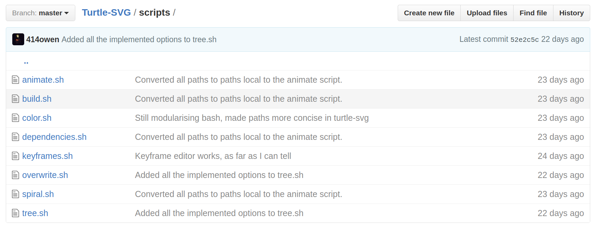

Bash
-> Rust
-> Turtle Graphics
-> Rust
-> SVG
-> PNG
-> MP4
### This is a dragon-curve

### I never made a dragon curve :(
## Meet Logo

### My turtle's language:
```
pu // Lift up pen (disables drawing)
pd // Lower pen down (enables drawing)
fd x // Move forward (x: float|int) pixels
lt x // Turn left (x: float|int) degrees
rt x // Turn right (x: float|int) degrees
pc x // Set pen colour to (x: hex|rgb|rgba)
ps x // Set pen size to (x: float|int)
ci 100 // Draw circle of radius (x: float|int)
```
The animations are done in bash!

#sorrynotsorry
### Here's a sample:
```
#!/bin/bash
# ---------------
# Keyframes
# ---------------
# This script takes in keyframes, and outputs numbers. It supports curved input
# and output of keyframes. The first argument is the amount of points to
# generate, the second is an array of keyframes (as a string). All keyframes
# will have the same amount of points between them, so if you want smoothness,
# distribute your keyframes evenly.
# The following example produces discrete points that form this curve:
#
# 50 |-------------------------------------------|
# | ***** | |
# 40 | ** ** |
# | * * |
# 30 | * * |
# | * * |
# 20 | * * |
# | * * |
# 10 |** * |
# |* ** |
# 0 | * |
# | ** *|
# -10 | * **|
# | * * |
# -20 | * * |
# | * * |
# -30 | * * |
# | * * |
# -40 | ** ** |
# | | ***** |
# -50 |-------------------------------------------|
# 0 100 200
# Points: 200
# Keyframes: # Newlines added for clarity
# "0 false # Starting point 0, do not curve on way out
# true 45 true # Keyframe 45, curve on way in and out
# false 0 false # Keyframe 0, do not curve on way in or out
# true -45 true # Keyframe -45, curve on way in and out
# false 0" # Endpoint 0, do not curve on way in
pi=$(echo "scale=10; 4*a(1)" | bc -l)
half_pi=$(echo "scale=10; $pi / 2" | bc -l)
one_and_a_half_pi=`echo "scale=10; $pi + $half_pi" | bc -l`
two_pi=$(echo "scale=10; 8*a(1)" | bc -l)
points=$1
keyframe_str=$2
keyframes=(`echo ${keyframe_str[*]}`)
keyframe_num=${#keyframes[@]}
middle_keyframes=$((($keyframe_num - 4) / 3))
last_keyframe=${keyframes[0]}
curve_out=${keyframes[1]}
points_between_frames=`echo "scale=10; $points / $(((($keyframe_num - 4) / 3) + 1))" | bc -l`
function interpolate {
last=$1
cout=$2
this=$3
cin=$4
pts=$5
diff=`echo "scale=10; $this - $last" | bc -l`
half_diff=`echo "scale=10; $diff / 2" | bc -l`
midpoint=`echo "scale=10; $half_diff + $last" | bc -l`
pi_step=`echo "scale=10; $pi / $pts" | bc -l`
half_pi_step=`echo "scale=10; $half_pi / $pts" | bc -l`
if $cout; then
if $cin; then
for i in `seq $half_pi $pi_step $one_and_a_half_pi`; do
echo `echo "scale=10; s($i) * (0 - $half_diff) + $midpoint" | bc -l`
done
else
for i in `seq $one_and_a_half_pi $half_pi_step $two_pi`; do
echo `echo "scale=10; s($i) * $diff + $this" | bc -l`
done
fi
else
if $cin; then
for i in `seq 0 $half_pi_step $half_pi`; do
echo `echo "scale=10; s($i) * $diff + $last" | bc -l`
done
else
lin_step=`echo "scale=10; $diff / $pts" | bc -l`
for i in `seq $last $lin_step $this`; do
echo $i
done
fi
fi
}
for index in `seq 1 $middle_keyframes`; do
current_frame=${keyframes[$((($index * 3)))]}
interpolate $last_keyframe $curve_out $current_frame ${keyframes[$(($index * 3 - 1))]} $points_between_frames
last_keyframe=$current_frame
curve_out=${keyframes[$((($index * 3) + 1))]}
done
interpolate $last_keyframe $curve_out ${keyframes[$(($keyframe_num - 1))]} ${keyframes[$(($keyframe_num - 2))]} $points_between_frames
```
### This command makes the video
```bash
{ for i in $KEYFRAMES; do
$DIR/../target/release/tree -c --leaf-color $leaf_color --branch-color $branch_color -b $branch_factor -i $iterations -a $base_angle -l $trunk_length -r $branch_ratio -p 960,1080 -s $i | $DIR/../target/release/turtle-svg -w 1920 -h 1080 | convert svg: png:-
done
} | ffmpeg -hwaccel vaapi -f image2pipe -r $FRAMERATE -vcodec png -i - -c:v libx264 -pix_fmt yuv420p -preset medium -crf 18 $DIR/../out.mp4
```
### Cool, thanks, code's here:
[Turtle-SVG](https://github.com/414owen/Turtle-SVG)